철도차량기사 (2020-06-06 기출문제)
1과목: 재료역학
1. 철도 레일의 온도가 50℃에서 15℃로 떨어졌을 때 레일에 생기는 열응력은 약 몇 MPa 인가? (단, 선팽창계수는 0.000012/℃, 세로탄성계수는 210 GPa 이다.)
- 4.41
- 8.82
- 44.1
- 88.2
(정답률: 알수없음)

2. 그림과 같은 트러스 구조물에서 B점에서 10kN의 수직 하중을 받으면 BC에 작용하는 힘은 몇 kN인가?
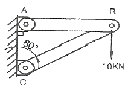
- 20
- 17.32
- 10
- 8.66
(정답률: 알수없음)
3. 동일한 길이와 재질로 만들어진 두 개의 원형단면 축이 있다. 각각의 지름이 d1, d2 일 때 각 축에 저장되는 변형에너지 u1, u2의 비는? (단, 두 축은 모두 비틀림 모멘트 T를 받고 있다.)
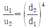
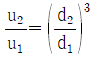
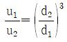
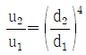
(정답률: 알수없음)
4. 단면적이 4cm2인 강봉에 그림과 같은 하중이 작용하고 있다. W = 60kN, P = 25kN, ℓ = 20cm 일 때 BC 부분의 변형률 ε은 약 얼마인가? (단, 세로탄성계수는 200 GPa 이다.)
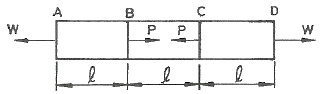
- 0.00043
- 0.0043
- 0.043
- 0.43
(정답률: 알수없음)
5. 그림과 같이 양단에서 모멘트가 작용할 경우 A지점의 처짐각 θA는? (단, 보의 굽힘 강성 EI는 일정하고, 자중은 무시한다.)
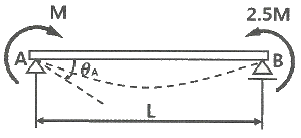
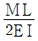
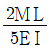
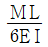
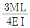
(정답률: 알수없음)
6. 그림의 평면응력상태에서 최대 주응력은 약 몇 MPa 인가? (단, σx = 175 MPa, σy = 35 MPa, τxy = 60 MPa 이다.)
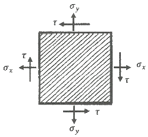
- 92
- 1⑤
- 163
- 197
(정답률: 알수없음)
7. 그림과 같이 외팔보의 중앙에 집중하중 P가 작용하는 경우 집중하중 P가 작용하는 지점에서의 처짐은? (단, 보의 굽힘강성 EI는 일정하고, L은 보의 전체의 길이이다.)
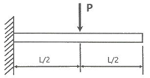
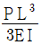
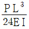
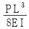
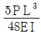
(정답률: 알수없음)
8. 원형 봉에 축방향 인장하중 P = 88kN이 작용할 때, 직경의 감소량은 약 몇 mm 인가? (단, 봉의 길이 L = 2m, 직경 d = 40mm, 세로탄성계수는 70 GPa, 포와송비 μ = 0.3 이다.)
- 0.006
- 0.012
- 0.018
- 0.036
(정답률: 알수없음)
9. 그림과 같이 길고 얇은 평판이 평면 변형률 상태로 σx를 받고 있을 때, εx는?
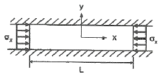
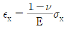
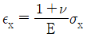
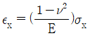
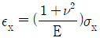
(정답률: 알수없음)
10. 그림과 같이 빗금 친 단면을 갖는 중공축이 있다. 이 단면의 O점에 관한 극단면 2차모멘트는?
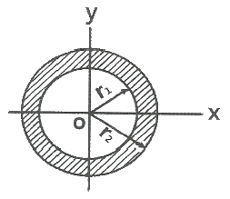
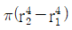
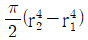
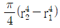
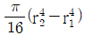
(정답률: 알수없음)
11. 외팔보의 자유단에 연직 방향으로 10kN의 집중 하중이 작용하면 고정단에 생기는 굽힘응력은 약 몇 MPa 인가? (단, 단면(폭×높이) b×h = 10cm×15cm, 길이 1.5m 이다.)
- 0.9
- 5.3
- 40
- 100
(정답률: 알수없음)
12. 오일러 공식이 세장비
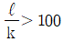
에 대해 성립한다고 할 때, 양단이 힌지인 원형단면 기둥에서 오일러 공식이 성립하기 위한 길이 “ℓ” 과 지름 “d” 와의 관계가 옳은 것은? (단, 단면의 회전반경을 k라 한다.)- ℓ ＞ 4d
- ℓ ＞ 25d
- ℓ ＞ 50d
- ℓ ＞ 100d
(정답률: 알수없음)
13. 직사각형 단면의 단주에 150kN하중이 중심에서 1m만큼 편심되어 작용할 때 이 부재 BD에서 생기는 최대 압축응력은 약 몇 kPa 인가?
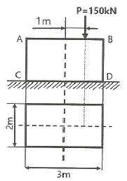
- 25
- 50
- 75
- 100
(정답률: 알수없음)
14. 지름 300mm의 단면을 가진 속이 찬 원형보가 굽힘을 받아 최대 굽힘 응력이 100MPa 이 되었다. 이 단면에 작용한 굽힘모멘트는 약 몇 kN·m 인가?
- 265
- 315
- 360
- 425
(정답률: 알수없음)
15. 지름 D인 두께가 얇은 링(ring)을 수평면 내에서 회전 시킬 때, 링에 생기는 인장응력을 나타내는 식은? (단, 링의 단위 길이에 대한 무게를 W, 링의 원주속도를 V, 링의 단면적을 A, 중력가속도를 g로 한다.)
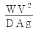
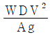
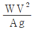
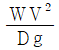
(정답률: 알수없음)
16. 그림과 같은 균일 단면의 돌출보에서 반력 RA는? (단, 보의 자중은 무시한다.)
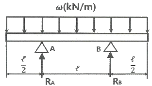
- ωℓ
- ωℓ/4
- ωℓ/3
- ωℓ/2
(정답률: 알수없음)
17. 양단이 고정된 축을 그림과 같이 m-n단면에서 T만큼 비틀면 고정단 AB에서 생기는 저항 비틀림 모멘트의 비 TA/TB는?
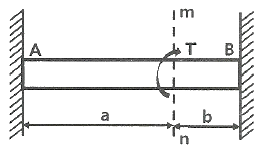
- b2/a2
- b/a
- a/b
- a2/b2
(정답률: 알수없음)
18. 그림과 같은 단면을 가진 외팔보가 있다. 그 단면의 자유단에 전단력 V = 40kN이 발생한다면 단면 a-b 위에 발생하는 전단응력은 약 몇 MPa 인가?
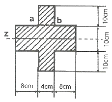
- 4.57
- 4.22
- 3.87
- 3.14
(정답률: 알수없음)
19. 전체 길이가 L이고, 일단지지 및 타단 고정보에서 삼각형 분포 하중이 작용할 때, 지지점 A에서의 반력은? (단, 보의 굽힘강성 EI는 일정하다.)
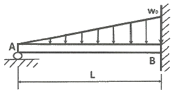
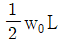
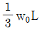
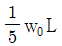
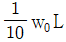
(정답률: 알수없음)
20. 원형단면 축에 147kW의 동력을 회전수 2000rpm으로 전달시키고자 한다. 축 지름은 약 몇 cm로 해야 하는가? (단, 허용전단응력은 τw = 50 MPa 이다.)
- 4.2
- 4.6
- 8.5
- 9.9
(정답률: 알수없음)
2과목: 내연기관
21. 도시출력이 8kW, 제동출력이 7kW 일 때 마찰출력은 몇 kW 인가?
- 0.5
- 1.0
- 1.3
- 1.8
(정답률: 알수없음)
22. 6실린더 4행정 사이클 기관이 3000rpm으로 운전되고 있을 때 제 3번 실린더의 흡기 밸브는 1초에 몇 번 열리는가?
- 30회
- 25회
- 18회
- 15회
(정답률: 알수없음)
23. 가솔린기관에서 크랭크축의 회전수와 점화 진각과의 관계에 관한 설명으로 옳은 것은?
- 회전수의 증가와 더불어 점화 진각은 커진다.
- 회전수의 증가와 더불어 점화 진각은 작아진다.
- 회전수의 감소와 더불어 점화 진각은 커진다.
- 회전수에 관계없이 점화 진각은 일정하다.
(정답률: 알수없음)
24. 전자제어 디젤기관의 독립형 분사펌프에서 ECU에 입력되는 요소가 아닌 것은?
- 기관회전속도
- 스로틀 포지션 센서(또는 APS)
- 냉각수 온도
- 타이밍 제어밸브
(정답률: 알수없음)
25. 기관에서 사용되는 냉각계통의 특성에 대한 설명으로 틀린 것은?
- 부하가 클 때 서모스탯 밸브의 열림 온도를 높게 하면 노크가 증가한다.
- 부하가 클 때 서모스탯 밸브의 열림 온도를 낮게 하면 토크 특성이 향상된다.
- 부하가 작을 때 서모스탯 밸브의 열림 온도를 낮게 하면 출력이 상승한다.
- 부하가 작을 때 서모스탯 밸브의 열림 온도를 높게 하면 연비가 향상된다.
(정답률: 알수없음)
26. 기관회전수가 3000rpm 일 때 피스톤의 평균속도가 20m/s 이라면 행정은?
- 10 cm
- 20 cm
- 30 cm
- 40 cm
(정답률: 알수없음)
27. 실린더 내로 흡입된 총 급기의 중량을 G, 소기 후 실린더 내에 충전된 급기의 중량을 Gr, 소기 후 잔류 배기가스의 중량을 Gx라 할 때 소기효율(ηs)은?
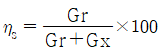
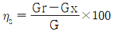
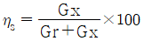
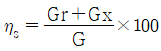
(정답률: 알수없음)
28. 밀폐계에 대한 설명으로 옳은 것은?
- 계의 경계를 통하여 에너지와 질량의 이동이 일어나는 계
- 계의 경계를 통하여 질량과 에너지의 이동이 불가능한 계
- 계의 경계를 통하여 에너지의 이동은 있으나 질량 유동이 없는 계
- 계의 경계를 통하여 질량의 유동은 있으나 에너지의 이동은 없는 계
(정답률: 알수없음)
29. 디젤기관의 노크에 대한 설명으로 틀린 것은?
- 디젤 노크는 압력 상승률에 반비례한다.
- 연소 초기에 폭발적인 연소 시 혼합기량을 감소시키면 노킹(노크)가 감소한다.
- 디젤 노크에 영향을 미치는 주요 변수는 연료의 착화성, 압축비, 연소실벽 온도가 있다.
- 디젤 노크는 비정상적인 연소에 의해 발생하는 급격한 압력상승으로 인한 충격적인 타음을 말한다.
(정답률: 알수없음)
30. 연료의 저위발열량이 43200kJ/kg이고,기관의 효율이 30%일 때 연료의 소비율(g/kW·h)은?
- 134.4
- 142.6
- 150.5
- 277.8
(정답률: 알수없음)
31. 연소실 설계 시 고려할 사항이 아닌 것은?
- 열효율 향상 대책
- 체적효율의 향상 대책
- 노킹의 억제 대책
- 크랭킹 제어 대책
(정답률: 알수없음)
32. 도시평균 유효압력 8.5 kPa, 제동평균 유효압력 7.2 kPa 일 때 기계효율은?
- 80%
- 85%
- 90%
- 95%
(정답률: 알수없음)
33. 디젤기관의 착화지연을 짧게 하는 사항이 아닌 것은?
- 혼합비를 높인다.
- 압축 압력을 높인다.
- 흡기 온도를 높인다.
- 실린더 온도를 높인다.
(정답률: 알수없음)
34. 내연기관에서 기관의 위험 회전수를 바르게 설명한 것은?
- 상용회전수를 넘는 회전수
- 크랭크축의 고유진동수와 일치하는 회전수
- 흡·배기가 따를 수 없는 회전수
- 연료분사가 따를 수 없는 회전수
(정답률: 알수없음)
35. 4행정 사이클 기관에서 배기밸브는 크랭크축이 몇 회전하는 동안에 한 번 개폐하는가?
- 1
- 2
- 3
- 4
(정답률: 알수없음)
36. 디젤 사이클의 열효율에 대한 옳은 설명은?
- 열효율은 체절비만 관계한다.
- 열효율은 압축비만의 함수다.
- 열효율은 체절비가 클수록 증가한다.
- 열효율은 압축비가 클수록 증가한다.
(정답률: 알수없음)
37. 윤활유에 대해 요구되는 성질에 포함되지 않는 것은?
- 산화성이 많고 발화점이 낮을 것
- 강인한 유막을 형성할 것
- 인화점, 발화점이 높을 것
- 점도의 변화가 적을 것
(정답률: 알수없음)
38. 가솔린기관의 유해배출가스 생성에 대한 설명으로 적합하지 않은 것은?
- CO는 이론공연비보다 회박측에서는 거의 생성되지 않고 농후측에서 대부분 생성된다.
- NOx의 생성을 지배하는 주요인자는 산소농도와 연소가스의 최고온도이다.
- HC 배출량은 일반적으로 공연비가 증가할수록 감사호다가 공연비가 18 이상 영역부터는 증가한다.
- 공연비가 일정한 조건하에서 HC와 NOx는 점화시기를 지연시킬수록 증가한다.
(정답률: 알수없음)
39. 연료의 연소 시 발생한 고압의 연소가스가 터빈날개를 돌려서 회전시키는 구조의 기관은?
- 스털링 기관
- 왕복형 내연기관
- 가스터빈 기관
- 로터리 기관
(정답률: 알수없음)
40. 체적효율에 대한 설명으로 옳은 것은?
- 고속으로 증가할수록 체적효율은 감소한다.
- 기관의 체적효율은 저속에서 가장 효율이 좋다.
- 연소실 내의 온도가 고온으로 상승하면 체적효율은 향상된다.
- 흡입되는 공기의 압력 및 온도가 표준상태일 경우에는 체적효율이 충진효율보다 더 좋다.
(정답률: 알수없음)
3과목: 기계설계
41. 나사의 리드 각을 α, 마찰각을 β라 할 때 나사의 효율 η를 구하는 식은?
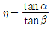
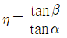
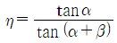
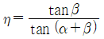
(정답률: 알수없음)
42. 폭 150mm, 두께 7mm인 가죽 평벨트가 속도 10m/s 일 때, 이 벨트가 최대로 전달할 수 있는 동력(kW)은? (단, 벨트의 허용응력 σa= 3MPa, eμθ= 3 이고 이음효율은 100% 이다.)
- 21
- 28
- 33
- 46
(정답률: 알수없음)
43. 사일런트 체인전동장치의 스프로킷 휠에서 1개의 양면이 이루는 각은 ø이고, 체인 링크의 양끝 경사면이 이루는 각을 β라고 할 때 ø와 β의 관계식으로 옳은 것은? (단, Z는 휠의 잇수이다.)
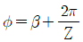
(정답률: 알수없음)
44. 하중 15000N의 전단하중을 받는 핀의 허용전단응력이 72MPa 일 때 핀의 지름은 최소 몇 mm 이상이어야 하는가? (단, 핀의 전단면은 2개이다.)
- 8.23
- 11.52
- 12.46
- 14.18
(정답률: 알수없음)
45. 다음 중 미끄럼 베어링 재료의 요구조건으로 틀린 것은?
- 열전도율이 낮을 것
- 내부식성이 강할 것
- 유막의 형성이 용이할 것
- 주조와 다듬질 등의 공작이 용이할 것
(정답률: 알수없음)
46. 브레이크 드럼에 대하여 단식 브레이크 블록을 밀어 붙이는 힘이 4000N, 마찰계수가0.25, 드럼의 지름이 500mm일 때, 제동토크(N·m)는?
- 31.3
- 62.5
- 125
- 250
(정답률: 알수없음)
47. 지름이 30mm인 회전축이 베어링에 의하여 양끝에서 지지되고 있다. 베어링 사이의 축 길이는 600mm이고, 그 중앙에 450N의 하중이 작용한다. 이 회전축의 위험속도(rpm)는? (단, 축재료의 탄성계수는 200GPa이고 축의 자중은 무시한다.)
- 1080
- 1870
- 2290
- 2450
(정답률: 알수없음)
48. 롤러 베어링에서 기본정격수명을 L(rev), 베어링의 기본 동정격하중을 C(N), 베어링에 발생하는 동등가하중을 P(N)라 할 때 이에 대한 관계식으로 옳은 것은?
(정답률: 알수없음)
49. 지름 55mm의 축에 폭, 높이, 길이가 각각 b=15mm, h=10mm, ℓ=100mm 되는 묻힘키가 있다. 축이 허용전단응력 τa=40MPa를 받는 상태에서 키에 생기는 전단응력(MPa)은?
- 15.9
- 31.7
- 47.7
- 63.6
(정답률: 알수없음)
50. 그림과 같은 블록 브레이크의 드럼축에 500N·m의 토크가 작용하고 있다. 축의 회전을 정지시키는데 필요한 최소 힘 F(N)는? (단, 브레이크의 마찰계수는 0.2 이다.)
- 625
- 1800
- 2000
- 2200
(정답률: 알수없음)
51. 이직각 모듈 5, 잇수 Z1 = 15, Z2 = 45인 헬리컬 기어가 물리고 있을 때, 기어의 중심거리(mm)는? (단, 나선각 β = 15° 이다.)
- 125
- 155
- 300
- 355
(정답률: 알수없음)
52. 두 축이 평행하고 중심선이 약간 어긋나는 경우에 사용하는 축이음으로 진동이나 마찰저항이 커서 고속회전에 부적합한 것은?
- 원통 커플링
- 머프 커플링
- 올덤 커플링
- 유니버설 커플링
(정답률: 알수없음)
53. 스플라인의 설명 중 옳은 것은?
- 인벌류트 스플라인의 치형의 압력각은 20°를 사용한다.
- 인벌류트 스플라인의 이의 높이는 표준기어 높이를 사용한다.
- 세레이션은 주로 정적 맞춤에만 쓰이고 이동에는 사용할 수 없다.
- 세레이션의 치형은 3각형, 4각형, 인버류트 세레이션이 있다.
(정답률: 알수없음)
54. 10 kN·m의 비틀림 모멘트를 받는 축에서 허용전단응력을 고려할 때 적용 가능한 최소 축지름(mm)은? (단, 허용전단응력 τa = 48 MPa 이다.)
- 115
- 112
- 102
- 92
(정답률: 알수없음)
55. 헬리컬 기어의 이직각 모듈 m = 3, 나선각 β = 30°, 잇수 Z = 30개일 때 바깥지름 Do(mm)는 얼마인가?
- 55
- 110
- 165
- 220
(정답률: 알수없음)
56. 맞대기 용접 이음에 있어서 강판의 두께가 가장 두꺼운 경우의 용접형식이 옳은 것은?
- V 형
- I 형
- U 형
- H 형
(정답률: 알수없음)
57. 코일스프링의 스프링 상수(k)에 대한 설명으로 틀린 것은?
- 스프링 소선의 지름이 클수록 스프링 상수는 커진다.
- 스프링 선재의 전단탄성계쑤가 클수록 스프링 상수는 커진다.
- 스프링 코일의 평균지름이 클수록 스프링 상수는 작아진다.
- 스프링의 권수(유효 감김수)가 많을수록 스프링 상수는 커진다.
(정답률: 알수없음)
58. 공기 스프링에 대한 설명으로 틀린 것은?
- 측면 하중에 대한 강성이 강하다.
- 하중과 변형의 관계가 비선형적이다.
- 공기의 압축성에 의한 감쇠효과가 있다.
- 공기량에 따라 스프링 상수의 조절이 가능하다.
(정답률: 알수없음)
59. 안지름 1000mm인 얇은 관에서 0.6MPa의 내압을 받고 있다. 이 관 재료가 인장강도가 300MPa, 안전계수가 3, 이음효율이 60%, 부식여유가 1mm라고 할 때, 관의 최소 두께(mm)는?
- 6
- 9
- 11
- 17
(정답률: 알수없음)
60. 나사의 강도에서 볼트가 축방향의 힘 W만을 받는 경우, 나사재료의 허용인장응력 σt 은 볼트의 외경 d와 어떤 관계인지 옳게 설명한 것은? (단, W는 일정하다.)
- d에 정비례 한다.
- d에 반비례 한다.
- d에 제곱에 정비례 한다.
- d에 제곱에 반비례 한다.
(정답률: 알수없음)
4과목: 철도차량공학
61. 크랭크 축의 점화순서를 결정하는데 있어 고려사항으로 틀린 것은?
- 연소가 동일간격으로 일어날 것
- 크랭크 축에 비틀림 진동이 일어날 것
- 혼합기가 각 실린더에 균등하게 배분될 것
- 한 베어링에만 연속적인 폭발하중이 걸리지말 것
(정답률: 알수없음)
62. 전기석 동력전달장치의 장점에 해당되지 않는 것은?
- 구조가 간단하다.
- 원격제어 및 총괄제어가 간단하다.
- 마력이 높은 경우에도 제어가 용이하다.
- 속도에 관계없이 원동기의 정격출력을 사용할 수 있다.
(정답률: 알수없음)
63. 디젤전기기관차에 운동에너지를 전기에너지로 변환시켜 열차속도를 감속시키는 장치는?
- 마찰제동 장치
- 발전제동 장치
- 기구제동 장치
- 주차제동 장치
(정답률: 알수없음)
64. 알루미늄 차체의 이중구조(double skin) 부재를 생산하는 성형방식은?
- 단조
- 압연
- 인발
- 압출
(정답률: 알수없음)
65. 디젤전기기관차 제동장치의 공기관 중 공기압력이 가장 높은 것은?
- 제동관 압력
- 제동통 압력
- 주공기관 압력
- 균형공기관 압력
(정답률: 알수없음)
66. 객화차 차륜을 차축에 압입하는 방법으로 틀린 것은?
- 짧은 시간에 압입력을 크게 하여 압입시킨다.
- 축 및 구멍에 윤활제를 도포하여 서서히 축을 압입한다.
- 압입 속도는 30~200mm/min를 원칙으로 한다.
- 압입시에는 좌·우 차륜의 각인 위치가 180° 위상을 갖는 위치로 압입한다.
(정답률: 알수없음)
67. 냉동사이클에서 증발기의 역할은?
- 열 흡수
- 고온·고압 압축
- 열 방출
- 냉매 응축
(정답률: 알수없음)
68. 디젤전기기관차 전기부호에서 아래의 기기 명칭은?
- 연동의 오버 래핑(over lapping)
- 저항기 2개
- 센서 코일
- 컨덴서
(정답률: 알수없음)
69. 전기차의 직류변동기 직·병렬 제어방식에서 전동기 단자전압이 1/2이 되면 전류는 몇 배가 되는가?
- 4
- 3
- 2
- 1.5
(정답률: 알수없음)
70. 열차속도 72km/h에서 제동을 체결하여 400m를 지나서 정차했다. 이 때 감속도는 몇 km/h/s인가? (단, 공주시간은 2초이다.)
- 2
- 4
- 6
- 8
(정답률: 알수없음)
71. 전동차 주회로의 고조파분과 전차선의 이상 충격전압 등을 흡수하는 장치는?
- 변류기
- 주변압기
- 주변환기
- 필터 리액터
(정답률: 알수없음)
72. 철도차량의 속도제어 방식 중 교류 유도전동기 속도제어에 주로 사용하는 방식은?
- 저항제어 방식
- 인버터제어 방식
- 쵸퍼제어 방식
- 직·병렬제어 방식
(정답률: 알수없음)
73. 객차 승강대 자동문에 승객의 신체일부가 끼이면 고무내부의 압력변화를 감지하여 문이 다시 열리게 하는 장치는?
- 프레스 웨이브
- 바이패스 스위치
- 비상 스위치
- 망원경식 베어링
(정답률: 알수없음)
74. 철도차량 탈선의 종류에 해당하지 않는 것은?
- 타오르기 탈선
- 뛰어 오르기 탈선
- 비틀려 오르기 탈선
- 미끄러져 오르기 탈선
(정답률: 알수없음)
75. 디젤전기기관차에서 조속기의 작용 기구로 틀린 것은?
- 속도조정 기구
- 연료조정 기구
- 압력조정 기구
- 부하조정 기구
(정답률: 알수없음)
76. 전기적 에너지를 기계적 에너지로 변환시키는 장치는?
- 엔진
- 발전기
- 변속기
- 전동기
(정답률: 알수없음)
77. 윤활장치에서 오일을 공급하는 윤활방법으로 틀린 것은?
- 방청식
- 비산식
- 압송식
- 압송 비산식
(정답률: 알수없음)
78. 디젤전기기관차에서 실린더 검사변의 역할에 대한 설명으로 옳은 것은?
- 실린더 내벽을 검사하는 구멍이다.
- 공기실 응결수를 배출시키는 장치이다.
- 피스톤 및 캐리어의 윤활을 담당하는 장치이다.
- 실린더 내부의 압축압력을 경감시키는 장치이다.
(정답률: 알수없음)
79. 철도차량의 밀착식 자동연결기에서 곡선 통과 시 상·하 및 좌·우 운동에 지장이 없도록 설치한 것은?
- 너클
- 유니버설 조인트
- 헤드
- 원핸들 마스콘
(정답률: 알수없음)
80. 도시철도차량 대차 및 차체지지 장치 설계에 관한 설명으로 틀린 것은?
- 공기스프링은 중앙에 탄성패드를 설치한다.
- 차체와 대차사이의 횡 방향 변위는 100mm를 초과하지 않도록 한다.
- 스프링장치의 고무제품은 차량의 정상운용 조건에서 일정 기간 이상의 내구력이 있어야 한다.
- 1차 스프링자잍는 고무스프링으로 하고, 2차 스프링장치는 볼스타레스형 공기스프링으로 한다.
(정답률: 알수없음)
5과목: 기계제작법
81. 선반의 부속장치 중 방진구에 관한 설명으로 틀린 것은?
- 이동식 방진구의 고정은 새들에 한다.
- 고정식 방진구의 고정은 베드에 한다.
- 이동식 방진구의 조(jaw)는 2개이다.
- 고정식 방진구의 조(jaw)는 2개이다.
(정답률: 알수없음)
82. 절삭 중 발생되는 칩이 절삭공구에 달라붙어 경사면에서의 흐름이 원활하지 못하고 연성이 큰 재질이 공작물을 깊은 절입량으로 가공할 때 생성되는 칩의 형태로 옳은 것은?
- 균열형 칩
- 유동형 칩
- 전단형 칩
- 열단형 칩
(정답률: 알수없음)
83. 소성가공 중 압출공정에서의 결함 종류로 옳지 않은 것은?
- 표면균열
- 파이프결함
- 정수압결함
- 내부균열
(정답률: 알수없음)
84. 초경합금 공구를 원통 연삭할 때 일반적으로 사용하는 숫돌입자로 가장 적합한 것은?
- A
- C
- WA
- GC
(정답률: 알수없음)
85. 주조공정에서 주물의 살두께 6mm, 주물의 중량이 1000kg일 때 쇳물의 주입시간은 약 몇 초인가? (단, 주물 두께에 따른 계수는 1.86 이다.)
- 58.82
- 59.62
- 60.23
- 61.45
(정답률: 알수없음)
86. 수기가공 중 수나사 작업을 위한 다이스의 종류 및 용도로 틀린 것은?
- 단체 다이스 – 지름조절이 불가능
- 분할 다이스 – 지름조절이 가능
- 날붙이 다이스 – 대형나사의 가공이 가능
- 스파일럴 다이스 – 소형나사의 가공이 가능
(정답률: 알수없음)
87. 테르밋 용접의 특징으로 틀린 것은?
- 용접작업이 단순하며, 기술 습득이 용이하다.
- 용접 기구가 간단하며 설비비가 저렴하다.
- 용접시간이 짧고, 용접 후 변형이 많이 발생한다.
- 용접 이음부는 특별한 모양의 홈을 필요로 하지 않는다.
(정답률: 알수없음)
88. 오버 핀법은 다음 중 어느 것을 측정하는 것인가?
- 공작기계의 정밀도
- 기어이 이두께
- 더브테일의 각도
- 수나사의 골지름
(정답률: 알수없음)
89. 레이저 가공기 중 발진 재료에 따른 종류로 틀린 것은?
- YAG 레이저 가공기
- H2O 레이저 가공기
- CO2 레이저 가공기
- 엑시머 레이저 가공기
(정답률: 알수없음)
90. 금속표면을 경화시키기 위한 것으로 금속표면에 알루미늄을 고온에서 확산 침투시키는 방법은?
- 칼로라이징
- 세라다이징
- 크로마이징
- 브로나이징
(정답률: 알수없음)
91. 특수성형에 의한 소성가공에서 다이에 금속을 사용하는 대신 고무를 사용하는 성형 가공방법은?
- 마폼법(marforming)
- 인장성형법(stretch forming)
- 폭발성형법(explosive forming)
- 하이드로폼법(hydroform process)
(정답률: 알수없음)
92. 기어 가공법 중 인벌류트 치형을 정확하기 가공할 수 있는 방법으로 래크 커터 또는 호브를 이용한 가공방법은?
- 선반에 의한 절삭법
- 형판에 의한 절삭법
- 창성에 의한 절삭법
- 총형커터에 의한 절삭법
(정답률: 알수없음)
93. 다음 중 절삭온도를 측정하는 방법이 아닌 것은?
- 열전대에 의한 방법
- 칩의 색에 의한 방법
- 시온 도료에 의한 방법
- 공구동력계를 사용하는 방법
(정답률: 알수없음)
94. 공작기계의 에이프런(apron)에서 하프너트의 용도로 옳은 것은?
- 선반에서 나사가공을 할 때
- 세이퍼에서 키홈 가공을 할 때
- 보링 머신에서 구멍을 가공할 때
- 밀링 머신에서 기어를 가공할 때
(정답률: 알수없음)
95. CNC선반에서 지름 50mm인 소재를 절삭속도 62.8m/min, 절삭깊이 5mm, 길이 400mm를 절삭할 때 소요되는 가공 시간은 약 몇 분인가? (단, 이송속도는 0.2 mm/rev다.)
- 1
- 3
- 5
- 7
(정답률: 알수없음)
96. 다음 중 고체침탄법의 특징으로 옳지 않은 것은?
- 설비비가 저렴하다.
- 작업호나경이 양호하다.
- 소량생산에 적합하다.
- 큰 부품에 처리가 가능하다.
(정답률: 알수없음)
97. 다음 중 불호라성 가스 아크용접에 사용되는 불호라성 가스만으로 나열된 것은?
- 수소, 네온
- 크립톤, 산소
- 헬륨, 아리곤
- 크세논, 아세틸렌
(정답률: 알수없음)
98. 입자가공 중 센터리스 연삭의 특징에 관한 설명으로 옳지 않은 것은?
- 연삭에 숙련을 필요로 한다.
- 중공의 가공물을 연삭할 때 편리하다.
- 가늘고 긴 가공물의 연삭에 적합하다.
- 연삭 숫돌의 폭이 크므로 숫돌지름의 마멸이 적고, 수명이 길다.
(정답률: 알수없음)
99. 주물 중심까지의 응고시간(t), 주물의 체적(V)과 표면적(S) 사이의 관계식으로 옳은 것은?
- t ∝ V/√S
- t ∝ (V/S)2
- t ∝ (1/SV)
- t ∝ (1/V /√S)3
(정답률: 알수없음)
100. 구성인선(bulit-up edge)이 발생하는 것을 방지하기 위한 대책은?
- 경사각을 작게 한다.
- 절삭깊이를 작게 한다.
- 절삭속도를 작게 한다.
- 절삭공구의 인선을 무디게 한다.
(정답률: 알수없음)
먼저, 레일의 길이 방향으로의 선팽창 계수를 이용하여 레일의 길이 변화량을 구한다.
ΔL = αΔT L
= 0.000012/℃ × (50℃ - 15℃) × L
= 0.00⑤4L
여기서 L은 레일의 길이이다.
다음으로, 세로탄성계수를 이용하여 레일의 응력을 구한다.
σ = Eε
= E(ΔL/L)
= 210 GPa × (0.00⑤4L/L)
= 113.4 MPa
따라서, 레일에 생기는 열응력은 113.4 MPa 이다.
하지만, 이 문제에서는 레일의 온도가 50℃에서 15℃로 떨어졌을 때 생기는 열응력을 구하는 것이므로, 음수 부호를 붙여줘야 한다.
따라서, 레일에 생기는 열응력은 -113.4 MPa 이다.
하지만, 보기에서는 양수로 표기되어 있으므로, 절댓값을 취해줘야 한다.
따라서, 정답은 88.2 MPa 이다.